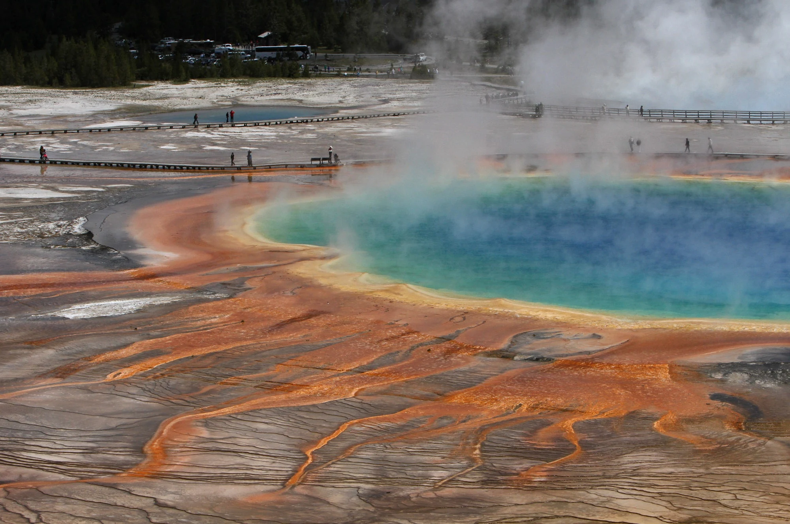
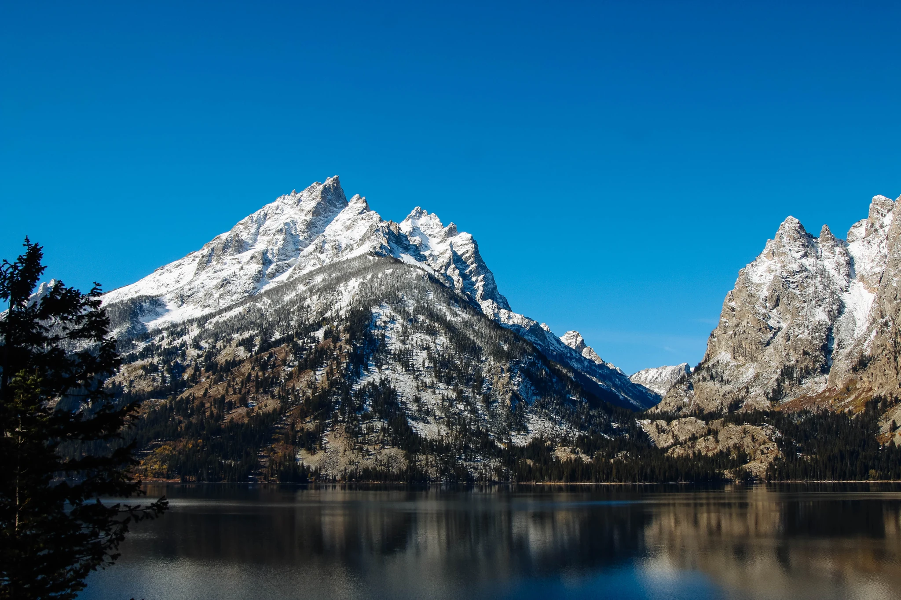

AMERICAN WEST
YellowstoneYellowstone
Thermal basins, canyons, morning wildlife and visitor centers, with short walks by area.
Open park guide →
THEME 01 / U.S. NATIONAL PARKS
Understand the landscape and plan your visit.
Personal experiences, landscape stories and daily routes in one place.
AN ILLUSTRATED PARK ATLAS
From canyons to glaciers, select one of eight park markers to begin. This illustrated atlas conveys the spirit of travel; markers are approximate. The cards below provide the same links.
AI-generated travel illustration, not a photograph or navigation map. Alaska and Hawaii are inset at different scales. Consult official park maps for entrances, roads and distances.
CHOOSE YOUR PARK
Choose a park, then explore the full route and nearby places.
No travel guides are available for this region yet. Choose another region or view all parks.

AMERICAN WEST
Thermal basins, canyons, morning wildlife and visitor centers, with short walks by area.
Open park guide →
AMERICAN WEST
Fault-block mountains, glacial lakes and the Snake River, from northern lakeshores to historic barns.
Open park guide →AMERICAN WEST
South Rim views, Yavapai Geology Museum and a helicopter flight.
Open park guide →
AMERICAN WEST
Salt flats, dunes and colorful hills: a stop-by-stop introduction to the desert.
Open park guide →
ALASKA
Sail from Seward to where valley glaciers meet the ocean. The coastline reveals the shapes carved by ice.
Open park guide →
ALASKA
Explore the interior wilderness by bus, then connect distant mountains with nearby trails and visitor-center exhibits.
Open park guide →
ALASKA
Bear viewing is more than a waterfall platform: understand the river, food and seasons, and give wildlife space.
Open park guide →
ALASKA
Start with exhibits and short trails at Copper Center. Reaching Kennecott calls for a separate extension.
Open park guide →FOLLOW THE JOURNEY
AROUND THE PARKS
Explore these stops separately from the national parks themselves.
Sandstone, the Colorado River, Lake Powell and the dam.
Open nearby guide →Compare a short state-recreation-site walk with a guided glacier hike, driving yourself or taking an Anchorage transfer.
View transport and a day-trip plan →City supplies, travel buffers and SJC/LAS lounge locations.
Anchorage guide →